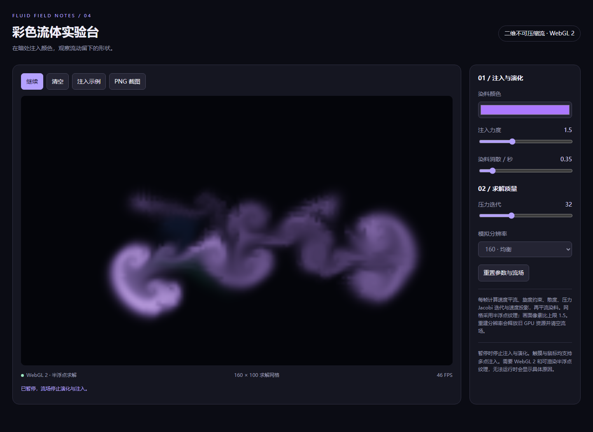

彩色流体实验台 · gpt-6.1-sol / high
输入与运行条件
用户指定模型名称 gpt-6.1-sol、档位 high，并要求在当前会话执行。复用本主题任务正文 v1，直接顺序实现，没有委派子代理。完整用户请求与任务正文见 prompt.md，仓库规则快照见 context/AGENTS.md，运行条件见 context/session.json。未读取其他分支、远程或工作目录中的旧实现。系统与开发者消息及完整工具往返未存档，输入完整性登记为 partial。
运行方式
直接用浏览器打开 index.html，或在仓库根目录执行 npm run preview，打开本实验入口。所有 HTML、CSS 与 JavaScript 均内嵌；不需要构建、服务器计算、CDN、远程字体或图片。
实现
WebGL 2 半浮点 RG16F / RGBA16F / R16F 纹理，速度与染料双缓冲；速度平流、旋度约束、散度、压力 Jacobi 迭代、投影及染料平流。手动双线性采样，无外部依赖。支持颜色、动量、消散、迭代、分辨率、暂停、清空、参数重置与 PNG。
首次产物与自检修复
浏览器功能验收前的首次完整版本保存在 first-pass/index.html，指纹见 first-pass/manifest.json。没有追加用户修复指令，也没有人工代码修改。
首次产物通过本轮功能验收，未追加修改实现。
验证记录
Chromium SwiftShader 成功执行 GPU 求解；浮点读回验证动量正负方向和消散参数；求解后画面改变，暂停保持图像一致；清空移除流场；重建确实删除旧纹理与帧缓冲；截图为有效 PNG。不支持 WebGL 2 的模拟环境显示错误。
HTTP 和 file:// 均在 Chromium 中检查；390px 触摸模式无页面水平溢出且可编辑。浏览器验收源码见 验收源码快照，覆盖根路径与 GitHub Pages 子路径。桌面与手机画面见 desktop.png 和 mobile.png。硬件与浏览器性能不作公平评测；流体 GPU 验收使用软件渲染器，不代表真实手机帧率。


最终检查：generate、validate、11 项 Node 测试、34 项浏览器回归、首页与实验脚本语法、git diff --check 均通过。结构化验收记录见 validation.json。
预览截图

由本实验最终版 index.html 在 Chromium 1440 × 1050 桌面视口生成；流体案例先注入双色笔迹并暂停，以展示交互后的模拟画面。
当前归档信息（自动生成）
- 实验 ID：
fluid-simulation--gpt-6-1-sol-high-r01 - 模型：GPT-6.1 Sol；推理档位：high
- 类型：single-html；预览：static；网络：offline
- 完整原始输入快照 · 主题与其他版本
- 输入记录：保存本轮用户原始请求与执行的 v1 任务正文；context 保存仓库指令和运行条件。未留存完整系统、开发者上下文及工具往返，不能视为严格隔离同题评测。
- 工具：Codex。用户指定 gpt-6.1-sol / high；按要求在当前会话直接顺序实现，无子代理。Windows PowerShell，Node v22.16.0；未读取历史实现，使用现有独立测试目录。
- 运行方式：浏览器直接打开本目录入口；CDN/外部素材需要联网。
- 费用记录：OpenAI · ChatGPT Plus 订阅；单案例货币金额未记录。据用户说明，OpenAI 模型通过 ChatGPT Plus 订阅测试；全部案例完成后，五小时额度未耗尽。未提供单案例费用金额。
- 实验台
部署适配记录
- 本轮从 v1 任务正文首次实现；first-pass/index.html 保留浏览器验证前的首次完整产物。
- 无人工代码修改，无追加用户修复指令；代理自检与修复记录见 Readme.md。